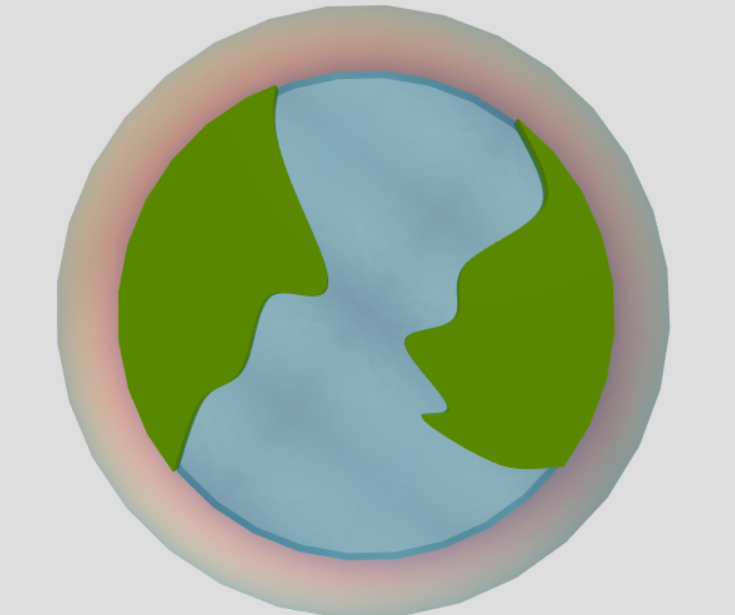

View the demo here. It make take a while to load.
This was a really fun project. I incorporated many major graphics concepts that we learned this semester including hierarchical modeling, lighting, camera, curves, texture-mapping, transparency, user interaction, and animation.
"Bird's Eye View" (click and draggable)
"First Person View" (animated from a car's perspective)
The biggest feature of my project is the iconic Golden Gate Bridge.
I also created a mini "world" (water, land, and sky).
I built 5 different types of vehicles to drive across the bridge: hatchback, sedan, van, truck, and bus.
Lastly, I added a curved road, along which the vehicles could drive.
I used constructive solid geometry
in 2 places: the road and the bridge cables. I used csg.js
and ThreeCSG.
To create the vertical cables of the bridge, I built an ExtrudeGeometry to "mask" the "bounding area"
of the cables, and I used CSG to grab their intersection.
I also used CSG to create the road. With a curve, I was able to create a TubeGeometry. In order to "extract" a flat road surface from the tube, I "intersected" it with a very flat cylinder, using CSG.
I became very familiar with Shapes and ExtrudeGeometries, because I used them a ton in this project (for the land "islands" and the vehicles, for example). It was pretty meticulous drawing the shapes out, and determining the coordinates, and it took a lot of pencil-sketching.
In addition to incorporating a bezier curve in the bridge itself, I used curves in 2 other major places: the
land "islands" and the road.
The shapes/outlines of each of the land islands are formed from a spline curve. I attempted to create
the road from a spline curve, but it was very difficult to "control" the curve and force it to pass
across the bridge without wiggling. So I strung together bezier curves instead.
Because I ambitiously decided to make a curvy road, I needed some way to animate my vehicles (and my camera) driving along the curve. Luckily I found curve.getPoint(t) and curve.getTangent(t) very useful. It was tricky to get the rotation and everything working, but I'm very happy with the results.